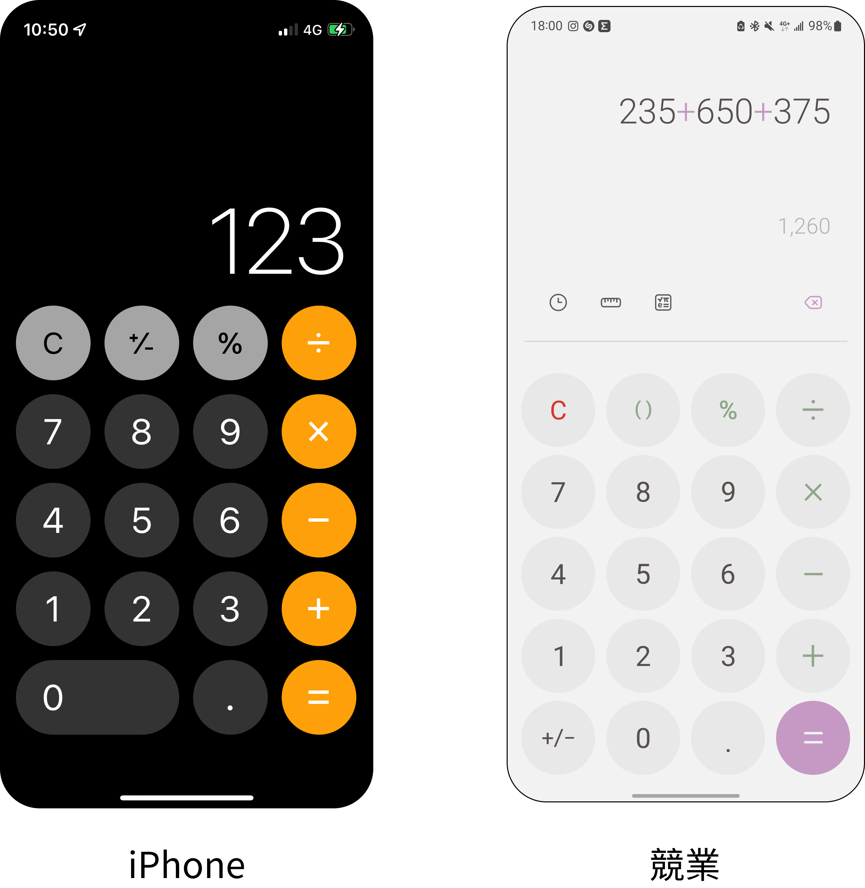

iPhone計算機
善用既有元素，提升iPhone計算機App的使用體驗。
Redesign App | 2022
成果
易用性測試回饋
改造後的SUS量表分數平均提升 17% ，以下為五位受試者的測試分數：
受試者回饋
降低風險
「刪除鍵比起重算或扣掉錯誤值，更方便、安全。」
有跡可循
「看得到算式，我就不用擔心不知道自己輸入了什麼。」
減輕負擔
「有了紀錄就不用再用力去記得數字了！」
設計
Redesign背景
發現問題
蘋果的產品以「使用體驗」受到好評，致力透過設計來提升使用者的體驗。但其內建的計算機App體驗，卻被許多使用者嫌棄。
提升價值
「使用體驗」是蘋果重要的競爭優勢。而計算機是日常中被廣泛使用的產品，若能改善體驗，便能創造多一分價值。特別是近年安卓也迎頭追上，越來越重視體驗。
改造目標
考量學習成本、一致性，本次目標為 善用既有元素，改善計算機App的使用體驗。並透過保留蘋果的設計風格，來體現品牌形象。
01
現況分析
現有使用者回饋
App Store
iPhone內建計算機，在App Store得到的評分為2.9/5分。至於其他較熱門的計算機App，大多都能得到4.7/5分以上。
多數熱門計算機都有大於1000則評分，而iPhone計算機只有75則，樣本數明顯較少。但有趣的是，其評分分布兩極化，1分和5分的數量不相上下，且遠遠超過中間評分的數量。
在可見的評論裡，只有1/10人表示好用，但沒有進一步說明。其他使用者則反應以下困擾：
- 缺少歷史紀錄
- 沒有倒退刪除鍵
- 無法預覽結果
- 無法顯示打的算式
社群討論
626 則留言
830 個讚
1 次分享
某網友在社群抱怨iPhone計算機不好用，該篇貼文引起討論，並被媒體報導。該網友認為只做簡單的運算，例如將兩數值加減乘除，可以「加減用」，但許多日常情境下的使用則不太方便。
進行質性分析時，我觀察到部分酸民言論，例如嘲諷使用者不懂得如何使用。也觀察到許多值得參考的資訊，使用者透過討論，更詳細的闡述困難情境，例如跟客戶報價、寫工作報表、購物比價等。
綜觀之，使用者主要的痛點為：
- 缺少歷史紀錄，如果忘記就得重新計算。
- 看不到算式，無法確定自己的輸入狀態。
- 輸入錯一個數字，就得全部重新操作。
而產品優點為：
- 按鍵大
- 介面簡潔
- 可以刪除打錯的數字
競品分析
| 品牌 | 加減乘除 | 科學計算 | 單位換算 | 歷史紀錄 | 顯示算式 |
|---|---|---|---|---|---|
| Apple | ✓ | ✓ | |||
| Samsung | ✓ | ✓ | ✓ | ✓ | ✓ |
| 小米 | ✓ | ✓ | ✓ | ✓ | ✓ |
競品分析
| 產品 | 功能 | 介面 | 其他發現 |
|---|---|---|---|
| Calculator Air | 基本功能、歷史紀錄、圖像掃描算式等。 | 配色和iPhone計算機很像，但介面較複雜，視覺空間較狹隘。 | 有特定TA、有付費的商業模式。突然彈出評分視窗，常造成不好的體驗。 |
| Calculator‰ | 只保留最基本的功能，設計簡單。 | 擬真風格，透過按鈕的陰影塑造出立體視覺。 | 簡單好操作、按鍵與數字夠大，滿足使用者的需求。 |
| 實體計算機 | 一般計算或科學計算，部分特別功能為切換進位與捨去法、切換小數位數、稅率等。 | 常有立體按鈕設計，觸覺體驗較豐富。常運用不同顏色，將按鍵分類。清除鍵常被設計成紅色，凸顯警示效果。 | 設計App介面時，常被用來參考。 |
功能分析
從使用手冊、部落客的文章，我將iPhone內建計算機的相關功能整理成圖表。
有趣的是，部分痛點其實有對應解方，例如左右滑動的手勢可刪除輸入錯的數字。
但因介面過於簡約，功能不可見，導致多數使用者不知道。
Insight
找出問題
從現有使用者回饋中，整理出主要的困擾有：
- 缺少歷史紀錄，如果忘記就得重新計算。
- 沒有算式，無法確認輸入狀態。
- 刪除功能被隱藏，多數使用者不知道。
找出亮點
從使用者回饋和競品分析中，整理出主要的產品優點有：
- 按鍵大、好操作
- 介面簡單、好看
iPhone的觀點
與競品比較後，可以發現iPhone的介面較偏向傳統計算機，螢幕沒有顯示算式，只顯示輸入的數字以及即時的計算結果。概念是早期的擬真風格，視覺是極簡風格。產品定位則是廣泛、簡單的使用情境，不像競品額外開發其他功能。
02
目標族群
Target Audience
- 目標受眾： 為iPhone使用者，年齡層廣泛。
- 使用情境： 多為生活中的數學計算，難度不高。
- 使用需求： 螢幕顯示清楚、數字能計算正確。

User Journey - 計算多個數字
清除鍵有AC和C兩種狀態，計算前是AC，計算中默默變成C。
而C無法清除所有數字，需要再按一次AC。狀態複雜，讓使用者較難掌握。
User Journey - 購物比價
缺少歷史紀錄，如果忘記就得重新計算。
同時要記住計算結果，又要計算別組數字，多工處理容易增加使用者的壓力。
User Journey - 計算抽成
即使沒有按下等於，iPhone計算機也會即時顯示計算結果。
當使用者看到螢幕上的數字改變，且沒有算式顯示狀態讓使用者確認、不假思索的狀況下，便以為運算已結束。
03
設計過程
決定功能
綜合使用者的需求回饋和競品分析，我將功能開發的必要程度分成三類。
最高
非常重要，優先加入功能地圖：
- 加減乘除
- 科學計算
- 顯示算式
- 歷史紀錄
次要
重要程度其次，可以考慮加入功能地圖：
- 單位換算
- 匯率換算
最低
較不重要，暫不加入功能地圖：
- 圖像掃描
- 稅率按鈕
- 進位捨去
- 小數位數
功能地圖
考量iPhone的商業觀點，以產品最初的簡單定位為前提，
因此只新增上述最需要優先開發的功能。
設計目標
提升體驗
- 顯示算式
- 歷史紀錄
- 更容易看見的倒退刪除功能
保留優點
- 按鍵大、方便操作
- 介面乾淨、美觀
品牌考量
- 呈現蘋果的極簡風格
- 視覺接近原生App
挑戰
一旦增加功能或資訊，就可能會壓縮介面空間，或讓畫面變得較複雜。
發想設計
顯示算式
降低和背景的對比
為了避免新增的資訊讓畫面變得混亂，我將算式設計成灰色，並且在不影響閱讀體驗的前提下，減少算式顏色和背景色的明度對比。

歷史紀錄
選擇其他觸發方式
競品設置icon，作為歷史紀錄的觸點，但容易使介面變得複雜。我納入蘋果的元素，找出其他觸發方式。
解方一：疊層卡片
常出現在鎖定螢幕上的通知、原生App的Onboarding。以卡片寬度、明暗的變化營造出「多個」、「可展開」的概念。
解方二：橫條
最常出現在Home Indicator，表現「可滑動」的概念。內建地圖和翻譯App也設計了橫條來控制Overlay視窗。
考量到疊層卡片的陰影在黑色背景下，視覺效果不明顯，且橫向螢幕的垂直空間不足，決定選擇「橫條」設計。
倒退刪除
在有限的介面中找出空間
如果能善用空間，就能避免影響算式和結果的介面，保持畫面的簡潔。例如，按鍵0的寬度是其他按鍵的兩倍。
跳脫框架
想像一個沒有等號的世界！
如果介面會顯示算式和結果，那我們還需要等號嗎？多出來的空間可以創造什麼價值？或者，人們仍然習慣按下等號，作為計算的結尾？
04
測試設計
5
位受試者
15 - 51
年齡區間
+17%
易用性分數
招募條件
根據本次專案的TA，招募5位iPhone使用者，並盡量使生理性別比例、年齡層比例均衡。
測試計畫
- 訪談使用經驗
- 任務操作與訪談
- SUS量表評分
使用者得到的價值
降低風險
「刪除鍵比起重算或扣掉錯誤值，更方便、安全。」
有跡可循
「看得到算式，我就不用擔心不知道自己輸入了什麼。」
減輕負擔
「有了紀錄就不用再用力去記得數字了！」
Insight
橫條設計
測試互動時，2位受試者向下滑動Overlay，1位先點擊再向下滑動，2位點擊橫條。
一開始Redesign時，我只有設計滑動的互動。從受試者的行為中，我發現使用者不一定會如想像中的直接滑動，所以需要再設計點擊橫條的互動，讓功能可以更容易被觸發。
倒退刪除鍵
在測試的任務中，4位受試者嘗試新的倒退刪除鍵，1位受試者則使用平常慣用的方法。未使用新設計的受試者表示，測試時沒注意到刪除鍵。
一開始Redesign時，我將刪除鍵設計成灰色，但考量誤觸的可能，我將它縮小尺寸，並使用背景色作為按鍵顏色。觀察後發現使用者操作順利，且考量到介面的一致性，最終將刪除鍵調回灰色。
05
改造結果
新增功能
顯示算式
可見的操作狀態
改造前
無此設計
改造後
減少對比，避免介面雜亂。
透過顏色、數字大小帶出階層，使結果清楚易見。
歷史紀錄
減少計算多組數字的負擔
改造前
無此設計
改造後
向下滑動Overlay或點擊橫條，展示歷史紀錄，讓介面更簡潔，保留品牌風格。
改善功能
看得到的刪除鍵
輸入錯誤不用從頭開始計算
改造前
對輸入的數字左右滑動，可達成刪除目的，但許多使用者不知道這項隱藏功能。
改造後
善用空間，在介面新增刪除鍵。並且使用蘋果的倒退刪除icon，讓風格一致。
穩定的清除鍵
提升操作的掌控度
改造前
有AC和C兩種狀態。計算前是AC，計算中默默變成C，而C無法清除所有數字，需要再按一次AC。狀態複雜，讓使用者較難掌握。
改造後
只有全部清除的狀態，減少觸點，使操作簡單化。
06
回顧反思
新的設計觀點
我過去學到的是：好的設計應該是直覺的，學習成本是種負擔。
但我在收集資料的過程，發現除了社群討論、媒體報導，也有許多部落客文章、書籍雜誌介紹iPhone使用攻略。另外，在測試的訪談中，一位忠實果粉的受試者提到，他喜歡使用iPhone祕技是因為感覺很酷。
看似負向的學習成本，卻帶來「製造聲量」、「會這樣操作很酷」的效果。期許自己不被設計原則侷限，能更深入的檢視設計的潛在影響，依據商業目標活用對的效果，創造價值。
建立Persona
之前的專案會描繪Persona，但這次考慮到iPhone的使用人口、使用情境廣泛，並且社群討論提到的使用情境十分具體，也有引起他人共鳴，便比較側重User Journey。
但在後期測試的訪談中，看見不同群體的鮮明特性，例如管帳的家庭婦女、和朋友聚會的年輕學生、忠實果粉等。
下次專案就算使用者族群廣泛，仍然可以試著進一步分析，訂定Persona，讓User Journey或發想階段有更深的同理。
設計的可能性
在研究競品介面時，我發現元祖－實體計算機的清除鍵常被設計成紅色，來達到警告效果，避免使用者誤觸。
有趣的是，某個App沿襲這樣的設計，卻有使用者以「礙眼」形容使用感受，因為紅色太顯眼。解決問題的過程中，可能也衍生其他的問題，這也提醒我驗證解方的重要性。
不過，設計也創造更多可行性，例如iPhone選擇清除鍵的位置設計在手指活動熱區之外。